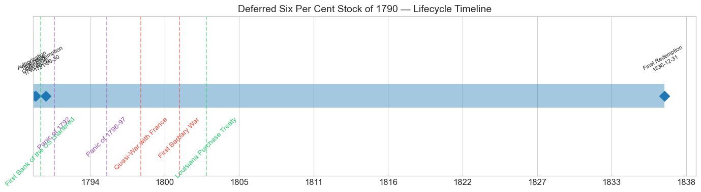
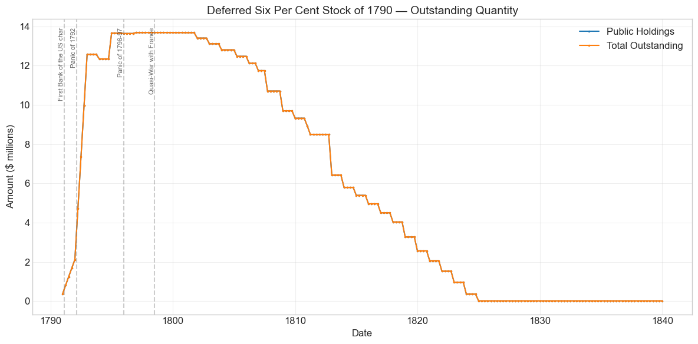
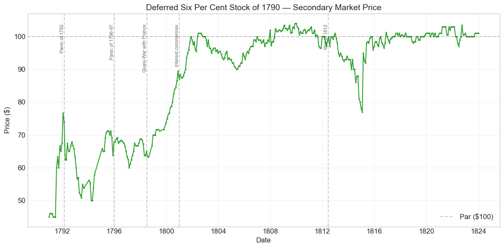
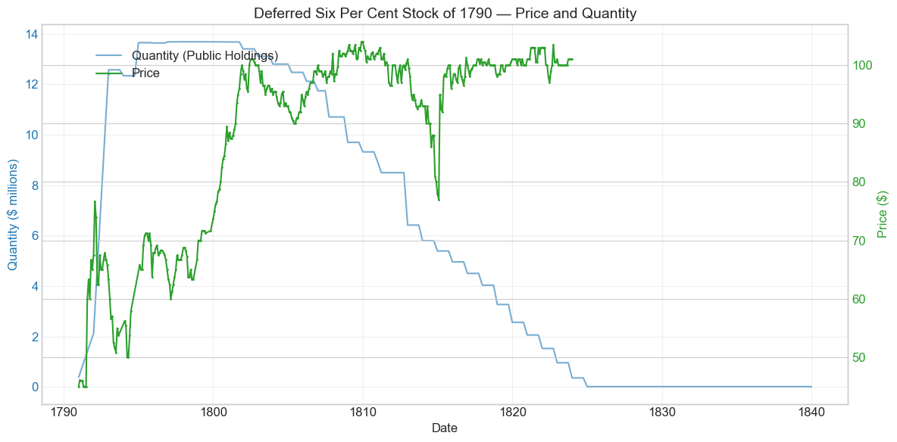
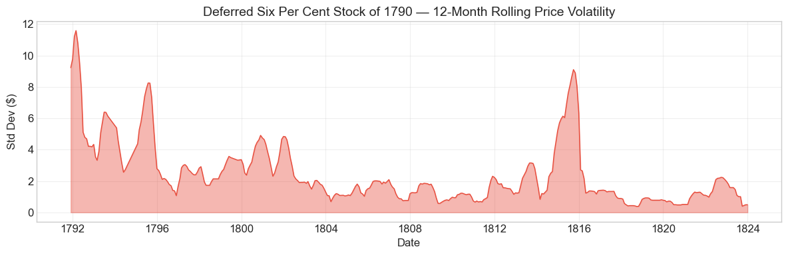
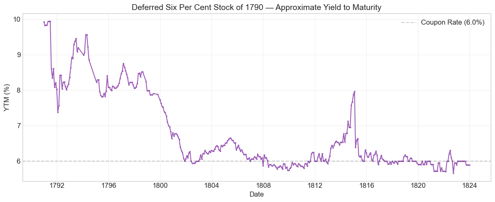

Bond Biography: Deferred Six Per Cent Stock of 1790#
Patience as Policy: Hamilton’s Deferred Sixes#
An enhanced chapter from the Hall-Payne-Sargent US Federal Bond Database (2,857 issues, 1776–1960)
Bond ID (L1): 20022 | Category: Interest Bearing > Marketable > Long Term Bond
Data note. From February 1801 onward the database records the same monthly price for this stock and for the Six Per Cent Stock of 1790 (ID 20021): every month from February 1801 to December 1823 is identical. Comparisons between the two after 1801 carry no information; only the 1790–1800 prices distinguish the deferred stock. The Three Per Cent Stock (ID 20023) has its own price series throughout. Prices from August 1814 to February 1817 are quoted in the paper of banks that had suspended specie payments.
import pandas as pd
import numpy as np
import matplotlib.pyplot as plt
import matplotlib.patches as mpatches
import datetime
import warnings
warnings.filterwarnings('ignore')
plt.style.use('seaborn-v0_8-whitegrid')
plt.rcParams.update({'figure.figsize': (12, 6), 'font.size': 12,
'axes.titlesize': 14, 'axes.labelsize': 12})
# Load the bond database
store = pd.HDFStore('../data/BondDF.h5', mode='r')
BondList = store['BondList']
BondQuant = store['BondQuant']
BondPrice = store['BondPrice']
store.close()
BondQuant_T = BondQuant.transpose()
BondPrice_T = BondPrice.transpose()
bond_id = 20022
print(f'Loaded data for: Deferred Six Per Cent Stock of 1790 (ID: 20022)')
/Users/thomassargent/anaconda3/lib/python3.9/site-packages/pandas/core/arrays/masked.py:60: UserWarning: Pandas requires version '1.3.6' or newer of 'bottleneck' (version '1.3.5' currently installed).
from pandas.core import (
Loaded data for: Deferred Six Per Cent Stock of 1790 (ID: 20022)
The Middle Security of the Grand Bargain#
Every debt restructuring conceals a haircut somewhere, and Alexander Hamilton hid his in time. When the first Secretary of the Treasury laid his Report Relating to a Provision for the Support of Public Credit before the House of Representatives on January 9, 1790, he faced an arithmetic problem as much as a political one. The domestic debt of the Confederation — loan office certificates, army certificates, and the rest of the Revolution’s paper — nominally promised 6% interest on tens of millions of dollars of principal, plus a mountain of unpaid arrears. The new federal government’s only substantial revenue was the customs, and the customs could not possibly service the whole mass at 6% from day one. Yet Hamilton was equally determined not to repudiate: certificates would be funded at face value, in the hands of whoever presented them, over James Madison’s objection that speculators who had bought soldiers’ certificates at a fraction of par should be discriminated against in favor of the original holders. Hamilton’s answer to the squeeze between full honor and empty coffers was a piece of financial engineering: pay full principal, but not full present value.
The Funding Act of August 4, 1790 (1 Stat. 138) split each subscriber’s claim into three new securities. For every $100 of old domestic principal, the holder received $66.67 of Six Per Cent Stock (ID 20021), paying 6% quarterly at once, and $33.33 of the subject of this chapter — the Deferred Six Per Cent Stock (ID 20022), which paid nothing at all until January 1, 1801, and 6% quarterly in specie thereafter. Arrears of interest were funded separately into the Three Per Cent Stock (ID 20023), whose own biography appears elsewhere in this volume. The deferred stock was thus a hybrid unusual for any era and remarkable for 1790: a zero-coupon security for its first decade that transformed, on a date fixed in advance, into an ordinary coupon bond economically identical to the plain sixes. Face values were preserved — no creditor could say his principal had been cut — but the ten-year interest holiday lightened the Treasury’s near-term burden substantially, bringing the blended effective rate on the whole funded package down toward 4%. Contemporaries could do the present-value arithmetic as well as we can, and so could the market: as we shall see, the deferred sixes traded at a deep discount to their immediate twins that melted away, almost mechanically, as the calendar advanced toward 1801.
That melting discount is what makes this bond’s story distinctive in the arc of U.S. fiscal history. The three siblings of 1790 shared one obligor, one revenue pledge, and one marketplace; the only important difference between the plain sixes and the deferred sixes was when the coupons started. Their price gap is therefore among the cleanest measures anywhere in the eighteenth-century data of the pure time value of money — and the Hall-Payne-Sargent price series, 381 monthly observations running from December 1790 into the 1820s, lets us watch it close month by month.
Historical Context#
The following major events occurred during this bond’s lifetime:
Date |
Event |
Category |
|---|---|---|
1791-02-25 |
First Bank of the US chartered |
Legislation |
1792-03-01 to 1792-04-30 |
Panic of 1792 |
Crisis |
1796-01-01 to 1797-12-31 |
Panic of 1796-97 |
Crisis |
1798-07-07 to 1800-09-30 |
Quasi-War with France |
War |
1801-01-01 |
Interest commences on the Deferred Stock |
Structural |
1801-05-10 to 1805-06-10 |
First Barbary War |
War |
1803-04-30 |
Louisiana Purchase Treaty |
Legislation |
1811-03-03 |
First Bank charter expires |
Legislation |
1812-06-18 to 1815-02-18 |
War of 1812 |
War |
1814-08-24 |
British burn Washington, D.C. |
Other |
1814-12-24 |
Treaty of Ghent (War of 1812 ends) |
Other |
1816-04-10 |
Second Bank of the US chartered |
Legislation |
1819-01-01 to 1821-12-31 |
Panic of 1819 |
Crisis |
1836-03-03 |
Second Bank charter expires |
Legislation |
The chapter on the Three Per Cent Stock of 1790 tells the political story of the funding program at length — the discrimination fight, the assumption crisis, the dinner-table bargain that traded the national capital’s location on the Potomac for the assumption of state debts. Here we summarize only what bears directly on the deferred stock, and dwell instead on how each convulsion of the 1790s and 1800s registered in this bond’s price.
Scripomania and the Panic of 1792#
The new funded securities, together with scrip of the newly chartered First Bank of the United States, fed the young republic’s first speculative bubble. The deferred sixes participated fully: the data show a +33% price spike in July 1791, the month of the frenzied initial subscription to Bank scrip, and further surges through the winter as William Duer and his associates borrowed heavily to bid up government stock. The deferred stock, quoted around $45–50 at the end of 1790, was — like the three per cents — a cheap, high-leverage way to buy face-value exposure to U.S. credit, and speculators used it that way. The bubble’s peak in January 1792 marks the start of this bond’s maximum drawdown; when Duer failed in March 1792 the price broke -15.5% in a single month. Hamilton’s crisis response — sinking-fund purchases of government stock, encouragement to banks to lend against securities collateral — confined the panic to weeks, an episode Sylla, Wright, and Cowen (2009) treat as a landmark of early central-banking practice.
The Panic of 1796–97 and the Quasi-War#
The credit contraction of 1796–97, transmitted from Britain and aggravated by the collapse of American land-speculation schemes (Robert Morris’s above all), weighed on all government stock, and war fever against France in 1798 forced the Treasury to borrow anew at 8%. The plain sixes sagged into the high $70s. The deferred sixes, remarkably, held their ground and even gained through these years — trading in the $60s in 1796–98 and rising toward the $70s by 1799. The reason is the bond’s peculiar structure: every passing month brought January 1801 closer, and this built-in “pull to conversion” appreciation was strong enough to offset the general rise in yields. A security whose price rises through a war is a curiosity; a deferred annuity approaching its start date is exactly such a security.
1801: The Conversion#
On January 1, 1801, the waiting ended and the deferred stock began paying 6% quarterly in specie. From that date it was, in every economic respect, the same instrument as the Six Per Cent Stock of 1790. From February 1801 onward the database carries a single price series for the two stocks, so their prices coincide by construction. The spread between the two securities — roughly $42 in 1791–92, $28 in 1795, $12 in 1798, $3 in 1800 — had converged to zero right on schedule.
The Barbary interlude, the War of 1812, and after#
The bond’s later life is the sixes’ later life. The Jefferson-Gallatin years of debt reduction saw prices firm to par and above, touching the series’ maximum of $104 in November 1809. The War of 1812 dragged the price down into the high $80s in 1814 — a mild penalty compared with what the war did to the government’s new borrowing, which had to be sold at deep discounts — and recovery followed the Treaty of Ghent. Throughout, redemption operated under the Funding Act’s famous limitation: the government could pay off the sixes and deferred sixes no faster than $8 per year on each $100 (interest and principal together), which once interest was running amounted to retiring roughly 2% of principal a year. Annual reimbursement installments, plus the conversion exchanges of 1807 and 1812, ground the stock away until it was essentially extinguished in the early 1820s.
# Bond Lifecycle Timeline
fig, ax = plt.subplots(figsize=(14, 4))
# Key dates
dates = [('Authorization', '1790-08-04'), ('First Issue', '1790-09-30'), ('First Redemption', '1791-06-30'), ('Final Redemption', '1836-12-31')]
events = [('First Bank of the US chartered', '1791-02-25', 'legislation'), ('Panic of 1792', '1792-03-01', 'crisis'), ('Panic of 1796-97', '1796-01-01', 'crisis'), ('Quasi-War with France', '1798-07-07', 'war'), ('First Barbary War', '1801-05-10', 'war'), ('Louisiana Purchase Treaty', '1803-04-30', 'legislation')]
import matplotlib.dates as mdates
from datetime import datetime
# Plot bond lifetime bar
d0 = datetime.strptime(dates[0][1], '%Y-%m-%d')
d1 = datetime.strptime(dates[-1][1], '%Y-%m-%d')
ax.barh(0, (d1 - d0).days, left=mdates.date2num(d0), height=0.3,
color='#1f77b4', alpha=0.4, label='Bond Lifetime')
# Mark key dates
for label, date_str in dates:
d = datetime.strptime(date_str, '%Y-%m-%d')
ax.plot(mdates.date2num(d), 0, 'D', color='#1f77b4', markersize=10)
ax.annotate(f'{label}\n{date_str}', (mdates.date2num(d), 0.25),
ha='center', va='bottom', fontsize=8, rotation=30)
# Mark historical events
colors = {'war': '#e74c3c', 'crisis': '#9b59b6', 'legislation': '#2ecc71', 'other': '#95a5a6', 'monetary': '#f39c12'}
for name, date_str, cat in events:
d = datetime.strptime(date_str, '%Y-%m-%d')
ax.axvline(mdates.date2num(d), color=colors.get(cat, 'gray'), alpha=0.5, linestyle='--')
ax.annotate(name, (mdates.date2num(d), -0.25), ha='center', va='top',
fontsize=10, rotation=45, color=colors.get(cat, 'gray'))
ax.set_yticks([])
ax.xaxis.set_major_formatter(mdates.DateFormatter('%Y'))
ax.set_title('Deferred Six Per Cent Stock of 1790 — Lifecycle Timeline')
ax.set_ylim(-1, 1)
plt.tight_layout()
plt.show()

Bond Features#
Feature |
Detail |
|---|---|
Name |
Deferred Six Per Cent Stock of 1790 |
Authorizing Act |
August 4, 1790 (the Funding Act, 1 Stat. 138) |
First Issue Date |
September 30, 1790 |
Term |
Indefinite — no stated maturity |
Interest Commencement |
January 1, 1801 |
First Redemption |
June 30, 1791 |
Final Redemption |
December 31, 1836 |
Coupon Rate |
6.0% per annum — after January 1, 1801; nothing before |
Payment Frequency |
Quarterly (4 times/year) |
Payable in Coin |
Yes |
Redemption Limitation |
No more than $8 per $100 per year, interest and principal inclusive (≈2% of principal annually) |
Origin |
One-third of subscribed old domestic principal; two-ninths of assumed state debts |
Three features deserve emphasis. First, the deferral itself: for its first decade the stock was, in modern language, a zero-coupon bond with a known conversion date — a structure that let the Treasury honor principal at par while deferring roughly a third of the interest bill on the domestic debt until customs revenues had grown into it. Second, the redemption limitation: like the plain sixes (and unlike the freely redeemable three per cents), the deferred stock carried the Funding Act’s pledge that the government would redeem no faster than 8% of the original sum per year, interest included. This clause — designed to reassure creditors that their 6% annuity could not be called away the moment rates fell — later became an obstacle Gallatin had to engineer around with the exchange operations of 1807 and 1812. Third, the infrastructure: like its siblings, the stock was a book-entry security, transferable at the Treasury and the loan offices maintained in each state, with quarterly specie payments — one of the earliest recognizably modern government securities systems anywhere.
# Display full bond features from database
row = BondList.loc[20022]
display_cols = [
"Treasury's Name Of Issue", 'Authorizing Act', 'Term Of Loan',
'First Issue Date', 'First Redemption Date', 'Final Redemption Date',
'Coupon Rate', 'Coupons Per Year', 'Callable', 'Coin',
'Authorized Amount', 'Price Sold'
]
print('Bond Features from Database:')
print('=' * 55)
for col in display_cols:
if col in row.index:
print(f' {col:<30} {row[col]}')
Bond Features from Database:
=======================================================
Treasury's Name Of Issue Deferred Six Per Cent Stock of 1790
Authorizing Act August 4, 1790
Term Of Loan indefinite
First Issue Date 1790-09-30 00:00:00
First Redemption Date 1791-06-30 00:00:00
Final Redemption Date 1836-12-31 00:00:00
Coupon Rate 6.0
Coupons Per Year 4.0
Callable 0.0
Coin 1.0
Authorized Amount nan
Price Sold 1.0
Bond Quantity Over Time#
The bond’s outstanding quantity peaked at $13.69 million on December 31, 1797. Quantity data span 1790 to 1839 (197 monthly observations).
# Bond quantity over time
fig, ax = plt.subplots(figsize=(12, 6))
for stype in ['Public Holdings', 'Total Outstanding']:
try:
s = BondQuant_T.loc[(20022, stype)]
s = s[s.notna()]
if len(s) > 0:
ax.plot(s.index, s.values / 1e6, marker='.', markersize=3, linewidth=1.5, label=stype)
except KeyError:
pass
ax.set_title('Deferred Six Per Cent Stock of 1790 — Outstanding Quantity')
ax.set_xlabel('Date')
ax.set_ylabel('Amount ($ millions)')
ax.legend()
ax.grid(True, alpha=0.3)
events = {'1791-02-25': 'First Bank of the US char', '1792-03-01': 'Panic of 1792', '1796-01-01': 'Panic of 1796-97', '1798-07-07': 'Quasi-War with France'}
for date_str, label in events.items():
d = pd.Timestamp(date_str)
ax.axvline(d, color='gray', alpha=0.4, linestyle='--')
ax.text(d, ax.get_ylim()[1]*0.97, label, rotation=90, va='top', ha='right', fontsize=8, alpha=0.7)
plt.tight_layout()
plt.show()

Quantity Analysis#
Like the other stocks of 1790, the deferred sixes were never sold; they were created by conversion. Holders of old domestic principal subscribed their certificates at the Treasury or a state loan office and received one-third of each $100 in deferred stock; subscribers of assumed state debts received two-ninths in the same. The outstanding quantity therefore climbed in administrative steps rather than market placements — the data show jumps of +114% in March 1791 and +53% in June 1791 as successive waves of certificate holders came in, with the big surge to $12.6 million by the end of 1792 as the assumed state debts were funded and Congress repeatedly extended the subscription deadline. Funding of remaining unsubscribed debt in the mid-1790s carried the total to its plateau of roughly $13.7 million, where it sat, untouched and unpaid, through the end of the decade — the whole point of the instrument being that it cost the Treasury nothing until 1801.
Redemption began almost the moment interest did. Once the deferred stock started drawing 6%, it moved to the front of the queue of debt worth retiring, and Gallatin’s debt-reduction program attacked it through three channels: the annual reimbursement installments permitted under the 8%-per-year limitation; open-market and sinking-fund purchases; and the voluntary exchange operations of 1807 and 1812, under which holders could convert old sixes and deferred sixes into new stock on terms that freed the Treasury from the redemption straitjacket. The chart shows the result — a steady staircase down from $13.4 million in 1801, a sharper drop around 1812 as the exchange of that year absorbed roughly $2 million, a wartime pause, and then resumed retirement after 1815 until the stock was essentially extinguished by 1824. The tiny residual of about $14,000 that lingers in the data until 1839 represents unclaimed stock — certificates whose owners never appeared for their money — and accounts for the formal final redemption date of December 31, 1836.
Secondary Market Prices#
Overall Statistics (1790-12-31 to 1823-12-31): Mean $89.03, Range $45.00–$104.00, Std Dev $15.74, 381 observations.
By Period:
Period |
Mean |
Std |
Min |
Max |
Obs |
|---|---|---|---|---|---|
Issue to First Redemption (1790-09 to 1791-06) |
$45.45 |
$0.56 |
$45.00 |
$46.12 |
7 |
First Redemption to Final Redemption (1791-06 to 1836-12) |
$89.73 |
$14.86 |
$45.00 |
$104.00 |
375 |
Read this price history as two lives joined at January 1, 1801. In its first life the deferred stock was a discount instrument whose price had two moving parts: the market’s discount rate, and the steadily shrinking distance to the day the coupons would begin. Starting near $45 at the end of 1790 — almost exactly what a 6% annuity commencing in a decade is worth at the roughly 6–7% yields then prevailing on the plain sixes — the price worked its way upward through the 1790s, interrupted by the bubble and panic of 1791–92 but resuming its climb even through the Quasi-War years, and reached the $80s and $90s by 1800. In its second life, after conversion, it simply was a six per cent stock: at or near par through the Gallatin years, above par at the 1809 peak of $104, down to the high $80s in the darkest months of the War of 1812, and back to par and above in the postwar years until the series ends in 1823 with the stock’s redemption.
# Annotated price chart
fig, ax = plt.subplots(figsize=(12, 6))
s = BondPrice_T.loc[(20022, 'Average')]
s = pd.to_numeric(s, errors='coerce').dropna()
if len(s) > 0:
ax.plot(s.index, s.values, marker='.', markersize=3, linewidth=1.5, color='#2ca02c')
ax.axhline(100, color='black', alpha=0.2, linestyle='--', label='Par ($100)')
ax.set_title('Deferred Six Per Cent Stock of 1790 — Secondary Market Price')
ax.set_xlabel('Date')
ax.set_ylabel('Price ($)')
ax.legend()
ax.grid(True, alpha=0.3)
events = {'1792-03-01': 'Panic of 1792', '1796-01-01': 'Panic of 1796-97', '1798-07-07': 'Quasi-War with France', '1801-01-01': 'Interest commences', '1812-06-18': 'War of 1812'}
for date_str, label in events.items():
d = pd.Timestamp(date_str)
ax.axvline(d, color='gray', alpha=0.4, linestyle='--')
ax.text(d, ax.get_ylim()[1]*0.97, label, rotation=90, va='top', ha='right', fontsize=8, alpha=0.7)
plt.tight_layout()
plt.show()

# Price and Quantity — dual-axis chart
fig, ax1 = plt.subplots(figsize=(12, 6))
# Quantity (left axis)
for stype in ['Public Holdings', 'Total Outstanding']:
try:
q = BondQuant_T.loc[(20022, stype)]
q = q[q.notna()]
if len(q) > 0:
ax1.plot(q.index, q.values / 1e6, color='#1f77b4', alpha=0.6, label=f'Quantity ({stype})')
break
except KeyError:
pass
ax1.set_xlabel('Date')
ax1.set_ylabel('Quantity ($ millions)', color='#1f77b4')
ax1.tick_params(axis='y', labelcolor='#1f77b4')
# Price (right axis)
ax2 = ax1.twinx()
p = BondPrice_T.loc[(20022, 'Average')]
p = pd.to_numeric(p, errors='coerce').dropna()
if len(p) > 0:
ax2.plot(p.index, p.values, color='#2ca02c', marker='.', markersize=2, label='Price')
ax2.set_ylabel('Price ($)', color='#2ca02c')
ax2.tick_params(axis='y', labelcolor='#2ca02c')
ax1.set_title('Deferred Six Per Cent Stock of 1790 — Price and Quantity')
ax1.grid(True, alpha=0.3)
fig.legend(loc='upper left', bbox_to_anchor=(0.1, 0.9))
plt.tight_layout()
plt.show()

Detected Price/Quantity Events#
The following significant movements were auto-detected:
Date |
Type |
Change |
Explanation |
|---|---|---|---|
1791-03 |
quantity_increase |
+114.1% |
Funding mechanics, not markets: a large tranche of subscribed principal was converted into new deferred stock as subscriptions were recorded at the loan offices. |
1791-06 |
quantity_increase |
+53.3% |
Continued subscription of old certificates into the new funded stock. |
1791-07 |
price_spike |
+33.3% |
Scripomania. The initial public offering of First Bank of the United States scrip on July 4, 1791 was wildly oversubscribed, and the enthusiasm spilled into all government stock. Low-priced instruments like the deferred sixes jumped hardest. |
1791-08 |
price_spike |
+5.5% |
The bubble’s last leg before the August–September 1791 mini-crash in Bank scrip. |
1791-09 |
price_drop |
-5.3% |
The scrip crash; Hamilton and the sinking fund commissioners made stabilizing purchases of government stock. |
1791-10 |
price_spike |
+11.1% |
The Duer boom resumes: leveraged speculators bid government securities back up through the winter. |
1791-12, 1791-09 |
quantity_increases |
+25.8%, +34.8% |
Further funding-program subscriptions, including assumed state debts. |
1792-01 |
price_spike |
+13.6% |
The speculative peak. From here begins the bond’s maximum drawdown. |
1792-03 |
price_drop |
-15.5% |
The Panic of 1792. William Duer’s failure in early March set off forced liquidation of exactly the securities his ring had accumulated. |
The causal chain in 1791–92 is well documented (Davis 1917; Sylla, Wright & Cowen 2009): easy credit from the newly opened Bank of the United States financed a leveraged long position in government stock concentrated in a few hands; when the Bank contracted and Duer’s private paper was protested, forced sales hit the sixes, the deferred sixes, and the threes together. Note that the “Nearest Historical Event” matching in the raw data misleadingly tags the 1791 spikes to the Panic of 1792 — the spikes were the cause of the panic’s severity, not its effect.
Price Volatility#
Maximum drawdown: -34.8% (from the speculative peak of January 31, 1792 to the trough of March 31, 1794)
Average monthly return: 0.262%
The volatility profile is front-loaded, even more so than for the bond’s siblings. The wild months all come in 1791–94: the scrip bubble, the Panic of 1792, and the depressed aftermath, aggravated in 1793–94 by the European war’s disruption of trade and the Genêt-era diplomatic alarms. Thereafter the deferral structure itself acted as a stabilizer: through the late 1790s the pull toward the 1801 conversion date gave the price a steady upward drift that damped the shocks battering the plain sixes, and the volatility series shows the 1798 Quasi-War alarm only faintly. After 1801 the bond’s volatility is the sixes’ volatility — a low ridge during the War of 1812, then quiet convergence toward redemption at par.
# Rolling volatility (12-month window)
p = BondPrice_T.loc[(20022, 'Average')]
p = pd.to_numeric(p, errors='coerce').dropna()
if len(p) >= 12:
rolling_std = p.rolling(window=12).std().dropna()
fig, ax = plt.subplots(figsize=(12, 4))
ax.fill_between(rolling_std.index, rolling_std.values, alpha=0.4, color='#e74c3c')
ax.plot(rolling_std.index, rolling_std.values, color='#e74c3c', linewidth=1)
ax.set_title('Deferred Six Per Cent Stock of 1790 — 12-Month Rolling Price Volatility')
ax.set_xlabel('Date')
ax.set_ylabel('Std Dev ($)')
ax.grid(True, alpha=0.3)
plt.tight_layout()
plt.show()
else:
print('Insufficient data for rolling volatility (need >= 12 observations)')

Approximate Yield to Maturity#
A word of caution is required here. The standardized YTM approximation below treats the stock as an ordinary 6% coupon bond maturing at the final redemption date of December 31, 1836 — a tolerable description of the security after January 1, 1801, but quite wrong before it, since the calculation credits the bond with coupons it was not yet paying. The apparent double-digit “yields” of the early 1790s are an artifact of that mismatch, not a measure of distrust in U.S. credit. For the deferred period the economically meaningful calculation is the one the market itself was doing: the price of the deferred stock should equal the price of the plain sixes discounted back from January 1801. At the observed prices — $45–50 for the deferred against $90–100 for the sixes in the early 1790s, with the ratio rising steadily thereafter — the implied discount rate hovers around the same 6–8% at which all federal stock then yielded. The convergence of the computed YTM toward the coupon rate after 1801 correctly reflects the bond trading as a par-grade 6% security for the rest of its life.
The database’s yield to maturity misleads for a deferred stock, so the right object before 1801 is a ratio. Let y = 6/P be the current yield on the plain sixes, where P is their price. If the market discounted the deferred coupons at the rate it applied to the sixes, the ratio of the deferred price to the sixes’ price at date t should equal (1+y)−(1801−t), the value at t of a dollar due on January 1, 1801. In the 105 months before 1801 in which both stocks are quoted (December 1790 to December 1800), the gap between the observed ratio and this benchmark averages −0.003, with a standard deviation of 0.026 and a range of −0.07 to +0.07. The gap is most negative in 1790–92 (mean −0.014, the bubble and panic years) and close to zero from 1793 on. The market priced the deferral almost exactly as the sixes’ own yield implied.
# Approximate Yield to Maturity
p = BondPrice_T.loc[(20022, 'Average')]
p = pd.to_numeric(p, errors='coerce').dropna()
final_redemption = pd.Timestamp('1836-12-31')
coupon_rate = 6.0
ytm_values = []
ytm_dates = []
for date, price in p.items():
years_left = (final_redemption - date).days / 365.25
if years_left > 0 and price > 0:
ytm = (coupon_rate + (100 - price) / years_left) / ((100 + price) / 2) * 100
ytm_values.append(ytm)
ytm_dates.append(date)
if ytm_values:
fig, ax = plt.subplots(figsize=(12, 5))
ax.plot(ytm_dates, ytm_values, color='#9b59b6', marker='.', markersize=3, linewidth=1.5)
ax.axhline(6.0, color='black', alpha=0.2, linestyle='--', label=f'Coupon Rate ({coupon_rate}%)')
ax.set_title('Deferred Six Per Cent Stock of 1790 — Approximate Yield to Maturity')
ax.set_xlabel('Date')
ax.set_ylabel('YTM (%)')
ax.legend()
ax.grid(True, alpha=0.3)
plt.tight_layout()
plt.show()
else:
print('Could not compute YTM')

Issuance, Distribution, and Redemption#
How it was placed. The deferred stock was never marketed — no underwriters, no offering price. It was created by conversion: every subscriber of old domestic principal automatically received one-third of his claim in deferred stock (and subscribers of assumed state debts two-ninths), issued at par of the claim in book-entry form at the Treasury or a state loan office. The “Price Sold” of 1.0 in the database records this exchange at face value, not a cash sale. No holder chose the deferred sixes; they came with the package, which is precisely why their market price is such an unpolluted measure of how investors valued the deferral.
Who held it. The initial holders were whoever held the old paper on subscription day — original creditors alongside the speculators who had accumulated certificates through the 1780s. Ownership then evolved as it did for the whole funded debt: banks, insurance companies, trustees, and estates accumulated the stock, and foreign investors — Dutch houses above all, later British — bought heavily through American agents, attracted by a security whose deep discount and mechanical appreciation toward 1801 made it, in effect, a dated bet on American solvency. Quotations appeared continuously in the Philadelphia, New York, Boston, and Baltimore papers, the raw material of the price series above.
How it ended. Redemption was governed by the Funding Act’s limitation of $8 per $100 per year, principal and interest inclusive. Once the coupons began in 1801, the Treasury under Gallatin started the annual reimbursement installments and supplemented them with sinking-fund purchases and the voluntary exchanges of 1807 and 1812, which converted deferred stock into new instruments free of the redemption restriction. The War of 1812 interrupted retirement; the postwar surpluses resumed it; and by 1824 the stock was gone in all but name, a quarter-century before its sibling three per cents made their exit under Jackson. The last few thousand dollars of unclaimed certificates lingered on the books into the late 1830s.
Implications and Legacy#
The instrument that made par possible. The deferred sixes were the hinge of Hamilton’s compromise. Full 6% service on the whole domestic principal was beyond the customs revenue of 1790; open repudiation, or Madison’s discrimination between original holders and purchasers, would in Hamilton’s view have destroyed the negotiability on which public credit depended. Deferring interest on one-third of the principal squared the circle: every certificate was honored at face value, yet the Treasury’s cash interest bill was cut to something the revenue could carry, with the deferred tranche timed to come on stream just as a decade of tariff growth made it affordable. Garber (1991) has analyzed the 1790 package as a market-based debt reduction: the restructuring extracted real present-value concessions from creditors — the deferral prominent among them — while leaving nominal claims intact and the government’s reputation not merely intact but transformed. It worked. Within a few years U.S. stock traded in Amsterdam and London on terms comparable to the debt of old European states, and when the government needed to borrow for the Quasi-War in 1798 — at a painful 8%, but successfully — it was borrowing on the credit the funding system had built.
A precedent in debt design. The deferred stock is among the earliest large-scale examples of what later centuries would call a deferred-interest or step-up security, and its career anticipates a recurring truth of sovereign finance: a credible sovereign can buy present relief by selling claims on its future, and the market will price those claims coolly and accurately. The smooth, almost actuarial closing of the deferred-to-plain spread across the 1790s — through a bubble, two panics, and an undeclared naval war — showed that even the infant American market could discount cash flows a decade out with discipline. Students of early asset pricing have returned to this spread ever since; it is as close to a controlled experiment as the eighteenth century offers.
A window on the funding system’s machinery. The bond’s quantity history displays the whole toolkit of early Treasury debt management in miniature: creation by administrative conversion, the redemption limitation that protected creditors and then frustrated the Treasury, Gallatin’s patient grinding-down through installments, purchases, and exchange offers, and extinguishment ahead of the cheaper-to-service threes. The order of retirement — dearest debt first — is exactly the rule a modern debt office would follow.
Anecdotes worth remembering. The deferred stock shared fully in the melodrama of 1791–92: it was among the securities William Duer’s ring bid up on borrowed money, and its 15% collapse in March 1792 helped mark America’s first financial panic. Its quiet triumph came later and attracted no headlines at all: on January 1, 1801 — in the same season as the first peaceful transfer of power between American parties — a promise made ten years earlier by a government that had never before kept such promises was honored to the day, and a security that had begun life at forty-five cents on the dollar drew its first quarterly coupon at par with its twin. Hamilton, by then out of office, had four more years to live; his deferred sixes, converted on schedule, may be as fitting a monument as any to the credit system he built.
References#
Primary Sources#
Hamilton, A. (1790). Report Relating to a Provision for the Support of Public Credit, communicated to the House of Representatives, January 9, 1790.
U.S. Congress, An Act making provision for the (payment of the) Debt of the United States (the Funding Act), August 4, 1790, 1 Stat. 138.
U.S. Treasury Department, annual reports of the Secretary of the Treasury and of the Commissioners of the Sinking Fund, 1790s–1830s.
Scholarly Works#
Sylla, R., Wright, R. E. & Cowen, D. J. (2009). “Alexander Hamilton, Central Banker: Crisis Management during the U.S. Financial Panic of 1792.” Business History Review 83(1): 61–86.
Davis, J. S. (1917). Essays in the Earlier History of American Corporations. Cambridge: Harvard University Press.
Garber, P. M. (1991). “Alexander Hamilton’s Market-Based Debt Reduction Plan.” Carnegie-Rochester Conference Series on Public Policy 35: 79–104.
Sylla, R. (1998). “U.S. Securities Markets and the Banking System, 1790–1840.” Federal Reserve Bank of St. Louis Review 80(3): 83–98.
Hall, G. J. & Sargent, T. J. (2014). “Fiscal Discriminations in Three Wars.” Journal of Monetary Economics 61: 148–166.
Hall, G. J. & Sargent, T. J. (2018). “Brief History of US Debt Limits Before 1939.” Proceedings of the National Academy of Sciences 115(12): 2942–2945.
Payne, J., Szőke, B., Hall, G. & Sargent, T. (2025). Quarterly Journal of Economics.
General Histories#
Bayley, R. A. (1881). The National Loans of the United States, From July 4, 1776 to June 30, 1880. Washington: Government Printing Office.
Dewey, D. R. (1918). Financial History of the United States. New York: Longmans, Green and Co.
Studenski, P. & Krooss, H. E. (1952). Financial History of the United States. New York: McGraw-Hill.
Perkins, E. (1994). American Public Finance and Financial Services, 1700–1815. Columbus: Ohio State University Press.
Ferguson, E. J. (1961). The Power of the Purse: A History of American Public Finance, 1776–1790. Chapel Hill: University of North Carolina Press.
Chernow, R. (2004). Alexander Hamilton. New York: Penguin Press.
Enhanced Bond Biography generated from the Hall-Payne-Sargent Bond Database. Narrative enrichment draws on Ferguson (1961), Garber (1991), Sylla, Wright & Cowen (2009), Bayley (1881), Studenski & Krooss (1952), and Perkins (1994). Companion chapters: Six Per Cent Stock of 1790 (ID 20021) and Three Per Cent Stock of 1790 (ID 20023).